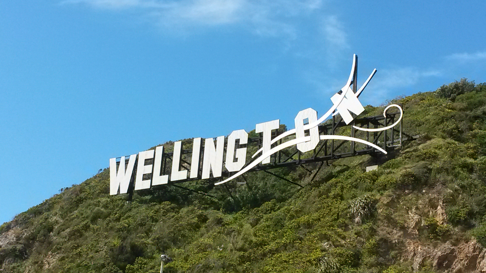

When you are visiting Wellington it's nice to know a bit about its history and how it came to be.
Wellington was named after Arthur Wellesley, the first Duke of Wellington, by the British settlers who arrived in 1839.
Wellington has had an establised film industry since the Lord of the Rings Trilogy was created there.
Wellington's blown away sign by the airport was created in 2010 to promote film industries for visitors flying in and out of Wellington.
The beehive is the name of New Zealands parliment building. It was built in 1979, and it is where the politicians work including the prime minister.
